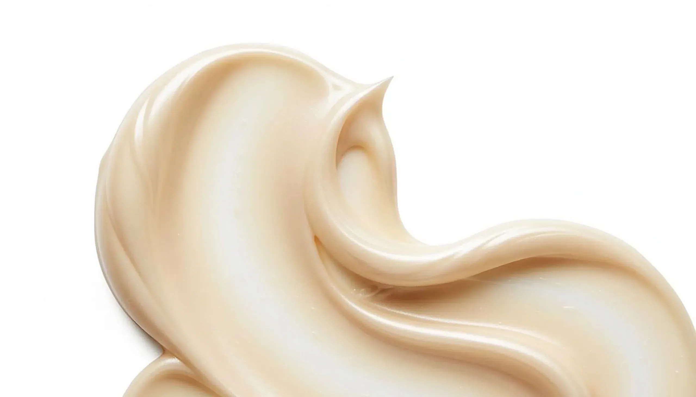
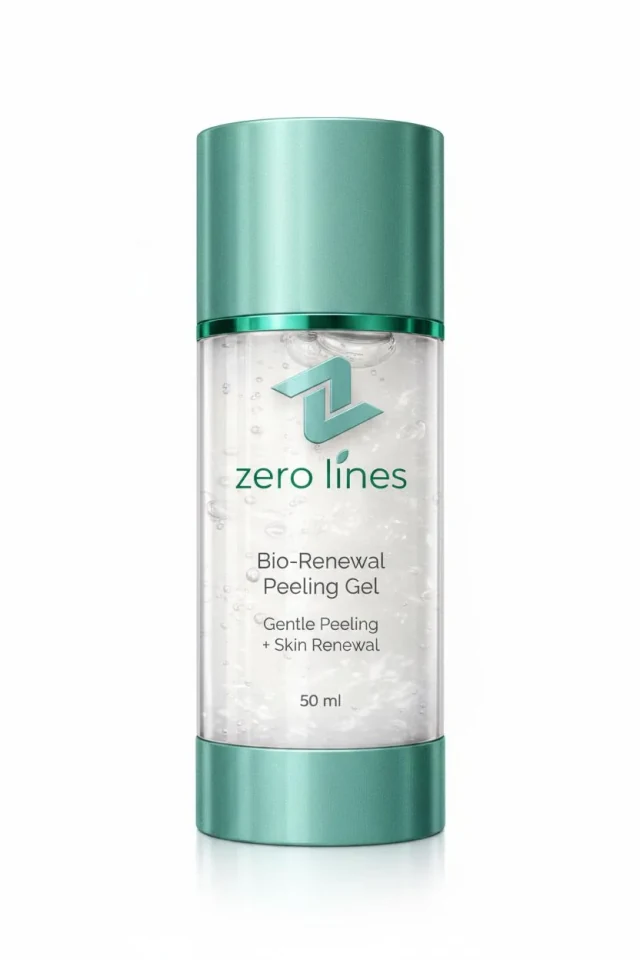

Routine
Why Weekly Exfoliation Outperforms Daily Scrubs
The skincare industry has sold us a dangerous idea: that scrubbing your face daily is virtuous. Exfoliating beads, gritty cleansers, rotating brushes, and even homemade sugar scrubs — all marketed with the promise of "revealing fresh skin." What they actually reveal, over time, is a compromised barrier, chronic sensitivity, and accelerated ageing.
What Daily Scrubs Actually Do
Physical exfoliants work by abrasion. They physically remove dead skin cells through friction. The problem is that they don't distinguish between dead cells ready to shed and living cells that are still attached. The result is micro-tears in the stratum corneum — tiny wounds that trigger inflammation, increase trans-epidermal water loss, and impair the barrier's protective function.
Over time, daily scrubbing creates a cycle of damage and repair that the skin can't keep up with. The barrier becomes chronically compromised. Sensitivity increases. Products that once felt fine start to sting. And paradoxically, the skin produces more dead cells to protect itself — the exact opposite of what exfoliation is supposed to achieve.
Chemical Exfoliation: A Smarter Approach
Chemical exfoliants work differently. AHAs (glycolic, lactic acid) and BHAs (salicylic acid) dissolve the bonds between dead skin cells — the "glue" that holds them together — allowing them to shed naturally without abrasion. Enzymatic exfoliants (like the brown algae extract in our Peeling Gel) achieve a similar effect through biological rather than chemical action.
The key advantage: chemical and enzymatic exfoliation target only the dead cells. Living tissue beneath is unaffected. There's no micro-tearing, no mechanical damage, no inflammation.
Why Weekly, Not Daily?
Your skin's natural cell turnover cycle takes approximately 28 days in young adults, extending to 40–50 days by age 50. This means new cells are constantly being produced at the base of the epidermis and migrating upward. By the time they reach the surface, they're dead and ready to shed.
Daily exfoliation disrupts this cycle. It removes cells before they're ready, forcing the skin to accelerate production. This might sound beneficial, but accelerated turnover without adequate repair time produces immature, poorly formed cells that don't function optimally.
Weekly exfoliation — 1 to 2 times per week — provides enough stimulation to clear congestion and encourage renewal without overwhelming the skin's repair capacity. It's the frequency that dermatologists consistently recommend.
The Zero Lines Approach
Our Bio-Renewal Peeling Gel was designed specifically for weekly use. The brown algae extract provides gentle enzymatic exfoliation that clears dead cells without acidity or abrasion. Aloe vera juice soothes as it works. Pyrenean mineral water maintains hydration throughout the process.
The result is skin that feels smoother and looks more radiant after each use — without the redness, tightness, or sensitivity that daily scrubs cause. Used once or twice weekly as part of the Zero Lines Protocol, it prepares the skin for subsequent products without compromising the barrier.

Bio-Renewal Peeling Gel
Gentle weekly exfoliation with brown algae extract, aloe vera, and Pyrenean mineral water. Clears congestion without compromising barrier integrity.
View Product →AI-Powered Analysis
See Your Skin Like Never Before
Upload a photo and answer 10 quick questions. Our AI analyses texture, tone, hydration, ageing signs, and lifestyle factors — then delivers a complete dermatologist-style report.
Analyse Your SkinSigns You're Over-Exfoliating
If you're experiencing any of these, cut back immediately:
- Persistent redness or flushing
- Products that previously felt fine now sting or burn
- Unusual dryness or tightness
- Increased breakouts (the skin produces more oil to compensate for barrier damage)
- Shiny but tight skin — a sign of a thinned, compromised barrier
Recovery from over-exfoliation typically takes 2–4 weeks of gentle, minimal skincare: cleanser, moisturiser, sunscreen, and nothing else.
The Science of Skin Cell Turnover
Your skin naturally exfoliates itself. In young adults, the complete turnover cycle — from basal cell formation to shedding at the surface — takes approximately 28 days. By age 50, this extends to 45–60 days. The result: duller skin, more congestion, and slower fading of pigmentation.
Exfoliation accelerates this process, but the key is matching the frequency to your skin's capacity to regenerate. Exfoliate too often, and you strip the protective barrier before it can rebuild. Exfoliate too rarely, and dead cells accumulate, blocking actives and dulling the complexion.
Physical vs. Chemical vs. Enzymatic Exfoliation
Physical exfoliation uses particles — beads, grains, or tools — to mechanically remove dead cells. It provides immediate smoothness but risks micro-tears in the skin, especially with harsh scrubs. Chemical exfoliation uses acids (AHAs, BHAs, PHAs) to dissolve the bonds between cells. It's more uniform and gentler when used correctly. Enzymatic exfoliation uses biological enzymes — from fruit (papain, bromelain) or marine sources — to break down dead cells without acidity.
Our Bio-Renewal Peeling Gel uses marine-derived enzymatic exfoliation. The polysaccharide hydrolases from brown algae break down dead cell bonds with the precision of a chemical exfoliant but the gentleness of an enzyme. It's effective enough to use weekly, gentle enough for sensitive skin.
"The question isn't whether to exfoliate — it's how often and with what. Weekly enzymatic exfoliation gives you the benefits without the barrier damage that daily scrubs cause."
— Zero Lines Formulation Team
Sources & References
- Kornhauser A et al. The effects of topically applied glycolic acid and salicylic acid. Journal of Cosmetic Dermatology. 2010;9(1):40-45.
- Draelos ZD. The cosmeceutical realm. Clinics in Dermatology. 2008;26(6):627-632.
- Tran D et al. An anti-aging skin care system containing alpha hydroxy acids and vitamins improves the biomechanical parameters of facial skin. Clinical, Cosmetic and Investigational Dermatology. 2015;8:9-17.
Build a Gentle Exfoliation Routine
Our AI Skin Analyser evaluates your barrier integrity and recommends the right exfoliation frequency and method for your skin.
Analyse Your SkinRelated Reading


Explore Zero Lines
Experience gentle weekly enzymatic exfoliation with the Bio-Renewal Peeling Gel, formulated with brown algae extract and Pyrenean mineral water.